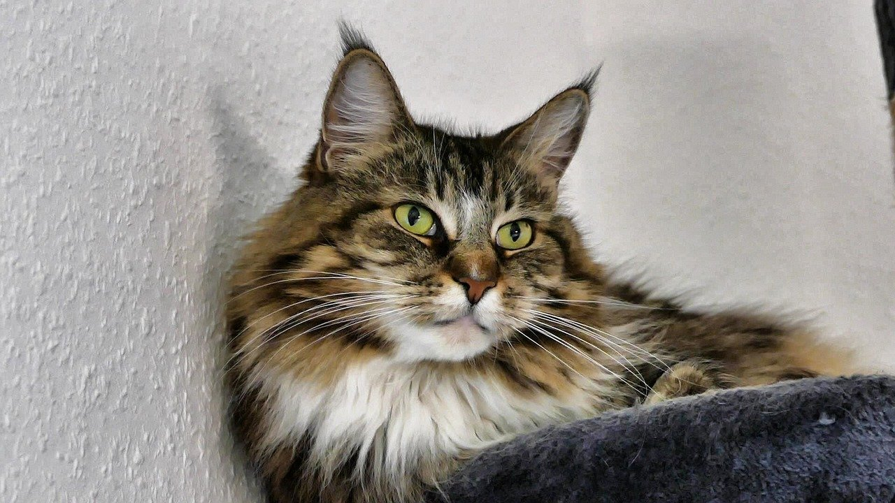
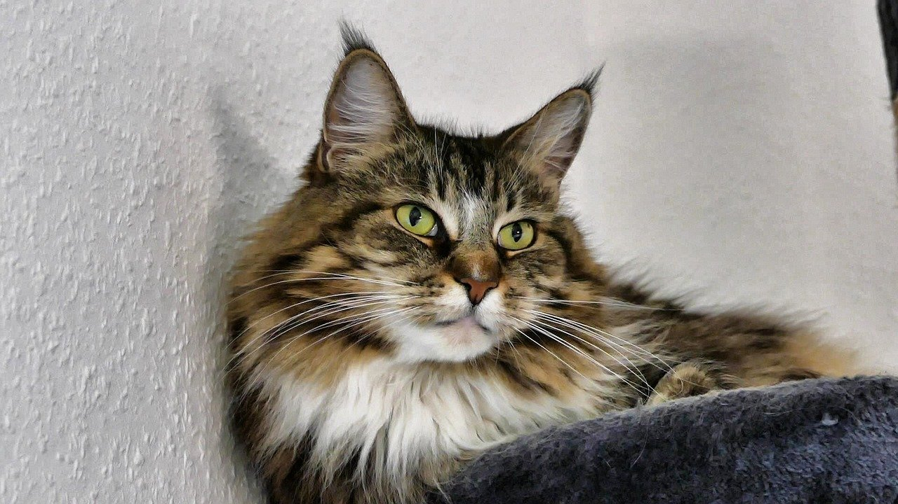

Cat Behavior
 
Ze Mighty Catto

Ze Mighty Catto
อุปนิสัยของแมวเหมียว
- แมวนั้นชอบกล่องกระดาษ
- แมวใช้เวลาในการนอนมากกว่าเวลาในการตื่นทั้งช่วงชีวิตของเขา!
- แมวร้องเหมียวกับมนุษย์เท่านั้น
- แมวชอบอยู่ที่สูง
- อุปนิสัยแปลก ๆ ของแมวมาจากสันชาติญาณตั้งแต่บรรพบุรุษของแมวเหมียว
หากคุณต้องการรู้เพิ่มเติมเกี่ยวกับน้องแมวคุณสามารถ
คลิ๊กที่นี่ได้เลย!